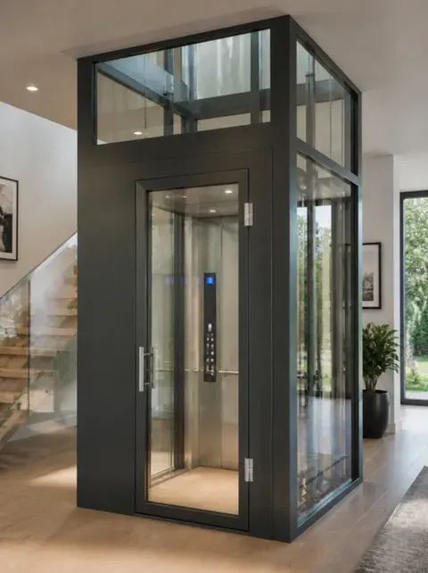

Intégrer un Home Lift dès la conception d'une villa : le guide pour architectes et bureaux d'études

Prévoir l'ascenseur dès l'esquisse coûte beaucoup moins cher que de l'ajouter après la livraison. Une villa se dessine 18 à 24 mois avant d'être habitée : c'est à ce moment que se décident la trémie, les réservations et l'emplacement.
Dans une villa sur plusieurs niveaux, le Home Lift n'est plus un luxe. Il anticipe le vieillissement des occupants, facilite le quotidien et valorise le bien à la revente.
Ce guide donne aux architectes et aux bureaux d'études les points à fixer dans les plans : trémie, fosse, hauteur du dernier niveau, gaine et alimentation.
1. La trémie : une emprise au sol dès 1 × 1 m
Un Home Lift s'installe dans un espace réduit, à partir de 1 × 1 m au sol. Un ascenseur standard demande une gaine d'au moins 1,6 × 1,6 m. Le détail des cotes est dans notre article quelle place prévoir pour un ascenseur de maison.
Deux types de gaine sont possibles :
- Gaine maçonnée : intégrée au gros œuvre en béton armé, elle fait partie de la structure porteuse.
- Gaine autoportante en acier et verre : idéale au cœur d'un escalier ouvert ou en façade. Elle apporte de la lumière et ne demande qu'un ancrage aux dalles.
Un Home Lift dessert de 2 à 5 niveaux. Au-delà, nous proposons un ascenseur standard.
2. Trois configurations d'implantation
- Dans la cage d'escalier (le cas le plus courant) : l'ascenseur prend place dans le vide de l'escalier ou le long de sa volée. Le gain de place est maximal et le rendu très fluide.
- En façade extérieure : quand l'intérieur ne peut pas être modifié, la gaine est adossée à la façade. Seuls les murs extérieurs sont ouverts pour créer une porte à chaque niveau.
- Par découpe de dalle (rénovation) : réservé aux maisons existantes sans autre emplacement. Il demande une étude de structure : chevêtre et renforcement des dalles en béton armé.
En construction neuve, la trémie prévue dans les plans évite la découpe de dalle. C'est le meilleur argument pour décider tôt.
3. Réservations génie civil et électricité
Un Home Lift demande beaucoup moins de génie civil qu'un ascenseur standard. Voici les points à intégrer aux lots techniques :
| Point de contrôle | Home Lift VIP Lift | Ascenseur standard |
|---|---|---|
| Fosse | 0,10 à 0,15 m | environ 1,2 m |
| Hauteur du dernier niveau | 2,5 m | 4 à 4,2 m |
| Emprise au sol | dès 1 × 1 m | au moins 1,6 × 1,6 m |
| Machinerie | intégrée au pied de la gaine | salle des machines, le plus souvent sur le toit |
| Alimentation électrique | 220 V monophasé ou triphasé, ou 380 V triphasé ; moteur de 2,9 kW ; disjoncteur dédié | ligne dédiée, puissance plus élevée |
| Entretien | 3 à 4 visites par an | au moins une visite tous les 45 jours |
La fosse réduite évite presque tout décaissement du radier. L'absence de salle des machines libère le toit et simplifie la toiture.
Alimentation électrique : trois raccordements possibles
| Raccordement | Tension | Conducteurs |
|---|---|---|
| Monophasé | 220 V | 3 fils : L1, N, PE |
| Triphasé | 220 V | 4 fils : L1, L2, L3, PE |
| Triphasé | 380 V | 5 fils : L1, L2, L3, N, PE |
Le moteur développe 2,9 kW pour une charge jusqu'à 400 kg. Si la maison n'a que le monophasé, c'est la solution la plus simple. Si le triphasé est disponible, préférez-le : il est plus stable et moins sensible aux pics de consommation de la maison.
Un disjoncteur dédié à l'ascenseur
Prévoyez dans le tableau un disjoncteur réservé à l'ascenseur, comme le recommande la réglementation européenne : Les schémas détaillés (fosse, câbles, disjoncteur, fixations) sont dans notre guide préparer l'installation d'un Home Lift.
- l'ascenseur se coupe facilement, par exemple avant une longue absence ;
- la maintenance et les tests se font en toute sécurité ;
- c'est la bonne pratique pour tout équipement électrique important.
4. Sécurité et normes
Nos Home Lifts sont conformes à la norme européenne EN 81-41, nos ascenseurs standard à la norme EN 81-20.
- Batterie de secours : en cas de coupure de courant, la cabine descend au niveau le plus bas et la porte se déverrouille.
- Garantie : 2, 3, 5 ou 10 ans, au choix du client.
- Pièces détachées : en stock localement, pour un dépannage rapide.
Ces trois points rassurent votre client final : citez-les dans votre notice descriptive.
Conclusion : prévoir tôt, c'est payer moins
Un Home Lift prévu dès les plans s'intègre parfaitement, sans découpe de dalle ni décaissement, et valorise la villa pour longtemps. Pour chiffrer le projet de votre client, appuyez-vous sur notre guide des prix et sur le simulateur en ligne.